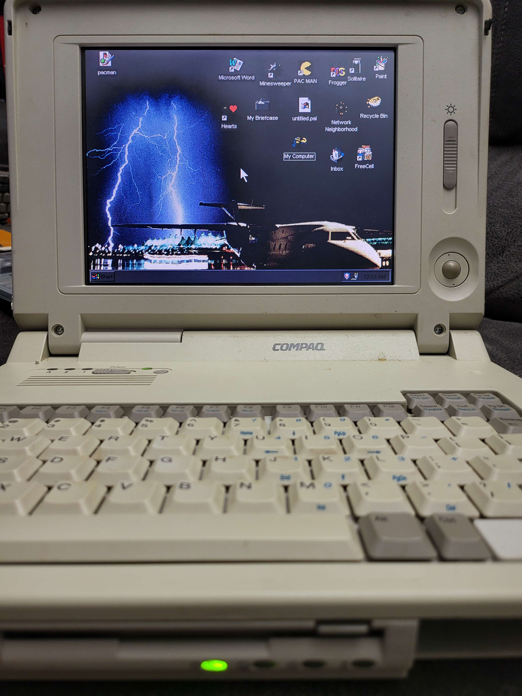

RV Life
It is now winter camping season at the campground, and having an RV here means that the RV needs to remain occupied. So, nothing but day trips to the house to get it cleaned out. In the spring, I don't plan on renewing my lease unless the winter is just too rough. But I have Refectix to put in my windows if it drops too cold for a long time. I have electric everything so that I don't have to worry about running out of propane. I've really been preparing it for dealing with the cold.
Tags: rv
Compaq Portable Tube Swap
After watching a video of someone doing the same to their IBM portabe, I decided to swap the tube in my Compaq Portable, which had a green CRT, to a white one from a Mac Plus. You have to swap the yoke because the wiring is different, but the pinout for the neck board is the same, so it went pretty well and only required minor adjustments when I was done. A white screen on this machine is absolutely beautiful.
Tags: retro-computing, compaq, crt
Twofer
Last night I managed to get two rewatches in to celebrate my upcoming vacation week.
I started off with Hi Fidelity. That one is a bit of a slow burn before it starts getting good. Does kinda make me with I could just open a record store though. ;)
And the second rewatch was Fire Birds, which is basically Top Gun in Apache attack helicopters with quite possibly even more star power in the cast. It was quite a bit better than I remembered it being and I enjoyed it very much.
Tags: movies, fire-birds, hi-fidelity
Grosse Pointe Blank
Confession time: I never saw Grosse Pointe Blank when it first came out. I didn't see it until many years later. This rewatch was only the second time I've seen the movie. And what a quirky little movie it is. It's a romcom. It's a thriller. It's an action-adventure. It's a crime drama. It's a bit of all those things, but unlike many films which fail to be more than one or two things, this one works.
Somewhat ironically, had I watched it when it first made it to premium cable, it probably would have been somewhere around the time of my own 10 year reunion.
Tags: movies, comedy, grosse-pointe-blank
Dream a Little Dream
Yet another movie rewatch? Well, it's what I've been doing a lot lately, so sure. Why not? ;)
This time, it was Dream a Little Dream. I remember seeing this one a few times shortly after it came out, and while I enjoyed it I found it a bit on the weird side. It wasn't the type of movie I particularly liked back then, but something drew me to it.
This is the first time I've rewatched it in nearly 40 years, and it hits a lot differently when you're older instead of recently graduated from high school. I actually like it even more now that I can relate to Coleman as much as I related to Bobby back when it came out.
If you didn't like it when you were young, watch it again with an open mind. You may find you like it now.
Tags: movies, rewatch, dream-a-little-dream
Battlestar Galactica
Just finished my first rewatch of the original Battlestar Galactica series from 1978 for the first time in forever. Galactica 1980 was horrible aside from "The Return of Starbuck," so I skipped that series and just stuck to the single season of the original.
I'll address the uneven acting first to get it out of the way. If it seems like the actors were reading their lines for the very first time in some of the episodes, it's because they were. The scripts were sometimes completed just before shooting, so the actors had to read them for the first time off of cue cards while shooting the scene. As a kid, I never caught on to this. As an adult, it's glaringly obvious.
Some of the episodes were a bit silly, also for the aforementioned reason. This was meant to be a three-episode miniseries but suddenly became a weekly series, without an adequate budget or time to prepare the scripts. The episode which weren't just plain silly were allegories, many of them for the Mormon church. The "Ships of Light" episode were always my least favorite, even as a kid. The "Eastern Alliance" was a bit on-the-nose with fairly recent Earth history, too. I started laughing during my rewatch when one of the Easter Alliance members spoke with a poorly-faked German accent.
I realize after this most recent re-watch that my fondness for the series is mostly nostalgia, because it reminds me of my childhood. I'll always have a fondness for it, even though it was never great to begin with.
Tags: tv, rewatch, battlestar-galactica, nostalgia
Revenge of the Nerds
I promise the blog isn't becoming a movie blog, but I am starting to rewatch a bunch of ones from my youth through my 20s. ;) This time, the rewatch was for Revenge of the Nerds.
There are quite obviously some problematic scenes in the movie. Lewis tricking Betty by pretending to be her boyfriend was wrong. I know they needed the two to connect for the movie to completely work, but there had to be another way.
Lamar's homsexuality carried a message of inclusion, but at the same time was played as a joke. I suppose that was the only way it could have been played at that point in the 80s, but it doesn't make it right. The jokes surrounding it most definitely fall flat these days. Asshole 14 year-old me probably found it funny. Luckily, people can grow out of stuff like that.
The body-shaming of the women of Omega Mu played for comedy was another problem with the film. I get that 14 year olds weren't meant to be allowed to see the film, but my parents were pretty liberal in some parts of their lives. I saw through that, because 14 year-old me thought most of the girls who were meant to be shown as "ugly" were better looking than most of the cheerleaders. I've never been one to abide by society's concept of "beauty." ;)
There are lots of of other problematic issues which made the film not age very well at all. Those issues were also problems with society at large back then, and many of them are, unfortunately, still a problem. But some of us managed to grow since then.
Now, you might be thinking that I did not enjoy rewatching the movie. You'd be dead wrong. I was a nerd. I am a nerd. I've alway preferred "geek," thank- you-very-much, so I identified with Lewis and Gilbert and the rest. I still do. The underlying story is still good, and not all of the comedy relied on the problematic parts. I still enjoyed the film, because I was able to look past the problems and at the underlying message of acceptance and inclusion, which I think is the real message of the film.
Tags: movies, comedy, revenge-of-the-nerds
Compaq LTE Elite 4/75CX

This is the first repair from the group of machines I received from a friend. It is a Compaq 486DX4/75 laptop with a 9.5" screen, 16MB of RAM, and a 340MB hard drive. The hard drive a standard 2.5" IDE drive, but it's stuck inside and aluminum "can" with a proprietary connector exposed instead of the normal one. When I first performed a triage on the machine, it powered up, but the screen was shattered and the hard drive was dead, and the floppy drive was in need of repair.
I did some searching on eBay and found a 4/50CX for cheap. This unit was listed as non-working and appeared to have been dropped. The main thing I was looking at in the listings was the screens. Most either appears to have cracks or to be delaminating, or didn't show individual pictures. Because this one was is such rough shape, the seller took lots of photos showing all the damage; cracked plastic, broken hinges, missing trackball, etc. But the screen looked like it was in great shape. So I pulled the trigger.
When I received it, I didn't even test it. There's a good chance it would have fired right up and just needed extensive plastic repair to get it back into a reasonable condition. But it was a random busted laptop from eBay, not something my friend's father passed on to be restored and cared for. My friend new that I would take care of his old collection, which is how I wound up with a rather large collection of mostly laptops in need of some TLC. So I figured out how to open the screen and completely stripped everything from inside it, including the hinges. I disassembled this laptop's screen and swapped them. There was only two connectors which disconnected the screen and four screws holding it in, so it was a pretty easy task. Plastic this old is pretty brittle, though, so care was taken not to weaking the plastic where the hinges attach any more than it already was. I plugged the laptop in and powered it on, and was greeted with it counting up the RAM and a perfectly good screen!
Next up was the hard drive. I hadn't opened the "can" on the old one yet, so as far as I knew, it was a completely proprietary drive. I noticed that the part number on the donor machine's drive matched the part number on this one, so I figured I'd give it a try. Imagine my surprise when it fired right up and loaded Win95. I believe DOS/Win31 would have been what this laptop shipped with, but I'll take the win. I know I'll have to prepare the can from the dead drive with a different solution at some point, but I'm happy with this drive for now.
At this point, I hadn't opened the laptop up except for the screen, but I wanted to see if the donor's floppy drive still worked, so I swapped those. In the process, I discovered some broken plastic parts inside so pulled them from the donor. Unfortunately, the floppy drive is dead. Research seems to indicate that it is a belt-driven drive, and the belts tend to melt over time. This is a problem for another day, though. As is a good cleaning. Aside from those, this machine is done, and I am completely happy that I was able to make good on the promise to keep it out of a landfill and get it running again.
Now I have a (potentially) working Elite 4/50CX with a busted screen and dead drives, as well was broken plastics, which I am unsure what I want to do with. I'm thinking of 3D-printing a case for the motherboard and such and using it with an external monitor. Then repairing the plastics and stuffing a Raspberry Pi into the shell. Or just testing and organizing all the leftover parts so that I have spares to help keep this one running. The CPU is socketed, so even the mainboard is the same between the two machines. Only the CPU speed is different.
 times
times